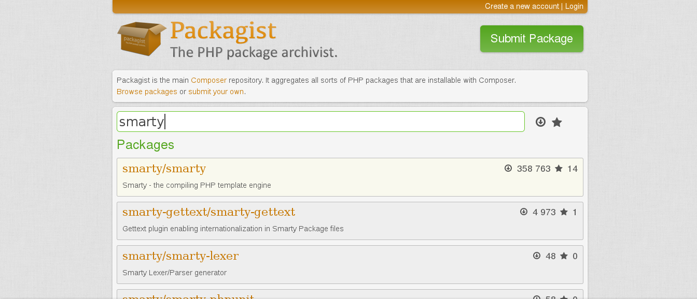
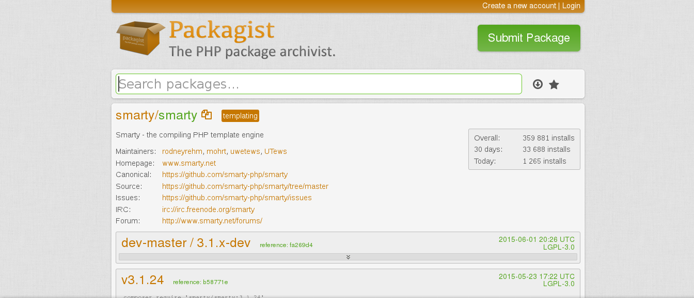
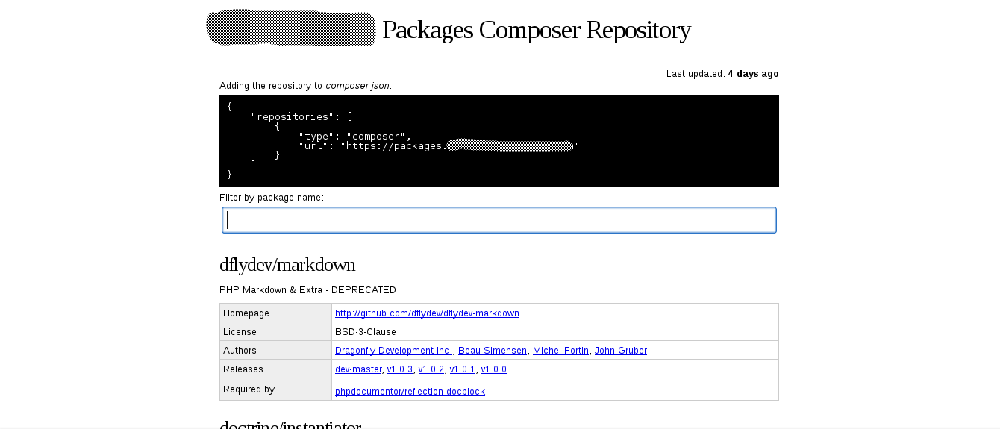

PHP Dependency Management
mit Composer und Satis


@whoami
Henrik Thesing
Teamleiter Software Entwicklung
MEHRKANAL GmbH
Ahaus / Essen
twitter @Hen_1982
github henrikthesing
Anwendungsbeispiel
“ACME Intranet”
Benötigte Features
- Template Engine
- E-Mail-Newsletter
- Excel-Export
- Logging
- UnitTests
- ...
Und jetzt?
Projektstart!
(the wrong way)
- Wir programmieren alles Features selbst
- PHPClasses / PHP Bibliotheken suchen
- PEAR-Pakete nutzen
- Full Stack Framework nutzen
Projektstart!
(the right way)
- Wir benutzen composer
Was ist Composer?
- ein OpenSource-Projekt
- ein Dependency Manager Tool für PHP
- Verwaltet Pakete auf Projektbasis
- definiert Einbindung von 3rd-Party Bibliotheken
- hat einen integrierten Autoloader
- Arbeitet mit Packagist, Github, SVN, ZIP etc.
- Es stehen fast 60.000 Pakete zur Verfügung (packagist)
Composer - Basics
Installation
mkdir "myapplication"
cd myapplication
/myapplication$ curl -s https://getcomposer.org/installer | php
Composer - Basics
Installation
#!/usr/bin/env php
All settings correct for using Composer
Downloading...
Composer successfully installed to: /myapplication/composer.phar
Use it: php composer.phar
Composer - Basics
Installation
henrik:~/myapplication$ ll
insgesamt 1088
drwxrwxr-x 2 henrik henrik 4096 Mai 24 12:14 ./
drwxrwxr-x 20 henrik henrik 4096 Mai 24 12:13 ../
-rwxr-xr-x 1 henrik henrik 1103856 Mai 24 12:14 composer.phar*
henrik:~/myapplication$Fertig!
Composer - Basics
Composer benutzen
henrik:~/myapplication$ php composer.phar [option]
init
require
install
update
self-update
Composer - Basics
Definition der Anwendung
henrik:~/myapplication$ php composer.phar inithenrik:~/myapplication$ ll
insgesamt 1088
drwxrwxr-x 2 henrik henrik 4096 Mai 24 12:14 ./
drwxrwxr-x 20 henrik henrik 4096 Mai 24 12:13 ../
-rwxr-xr-x 1 henrik henrik 64736 Mai 24 13:11 composer.json
-rwxr-xr-x 1 henrik henrik 1103856 Mai 24 12:14 composer.phar*
henrik:~/myapplication$Composer - Basics
Definition der Anwendung
{
"name": "henrikthesing/acme-intranet",
"description": "ACME Intranet",
"require": {
"phpmailer/phpmailer": "^5.2",
"phpoffice/phpexcel": "^1.8",
"monolog/monolog": "^1.10"
},
"require-dev": {
"phpunit/phpunit": "^4.5"
}
}
Composer - Basics
Definition der Anwendung
henrik:~/myapplication$ composer require smarty/smarty:v3.1.24henrik:~/myapplication$ composer require --dev phpmd/phpmdComposer - Basics
Definition der Anwendung
{
"name": "henrikthesing/acme-intranet",
"description": "ACME Intranet",
"require": {
"phpmailer/phpmailer": "^5.2",
"phpoffice/phpexcel": "^1.8",
"monolog/monolog": "^1.10",
"smarty/smarty": "v3.1.24",
},
"require-dev": {
"phpunit/phpunit": "^4.5",
"phpmd/phpmd": "^2.2"
}
}
Composer - Basics
Abhängigkeiten installieren
henrik:~/myapplication$ php composer.phar installComposer - Basics
Abhängigkeiten installieren
Loading composer repositories with package information
Installing dependencies
- Installing smarty/smarty (v3.1.24)
Downloading: 100%
...
- Installing phpmailer/phpmailer (5.4.4)
Downloading: 100%
...
- Installing phpoffice/phpexcel (1.9.1)
Downloading: 100%
...
Writing lock file
Generating autoload files
Composer - Basics
Abhängigkeiten installieren
$ tree -L 3
|-- composer.json
|-- composer.lock
|-- composer.phar
`-- vendor
|-- autoload.php
|-- composer
| |-- ClassLoader.php
| |-- autoload_classmap.php
| |-- autoload_namespaces.php
| |-- autoload_real.php
| `-- installed.json
`-- monolog
`-- monolog
`-- phpoffice
`-- phpexcel
Composer - Basics
Abhängigkeiten aktualisieren
$ php composer.phar updateComposer - Basics
Abhängigkeiten aktualisieren
Loading composer repositories with package information
Updating dependencies
- Removing monolog/monolog (1.3.0)
- Installing monolog/monolog (1.4.6)
Writing lock file
Generating autoload files
Ein einzelnes Paket aktualisieren
$ php composer.phar update monolog/monologComposer - Basics
composer update vs. composer install
In der Entwicklungsumgebung
- Abängigkeiten zu composer.json hinzufügen
- composer install ausführen
- Weitere Abhängigkeiten hinzufügen
- composer update ausführen
Composer - Basics
composer update vs. composer install
In der Produktionsumgebung
- composer.lock auf Produktionsserver schieben
- composer install ausführen
Composer - Basics
composer update vs. composer install
"Niemals composer update in der Produktionsumgebung ausführen, da dadurch unter Umständen Pakete aktualisiert werden, die auf der Entwicklungsumgebung in einer älteren Version vorliegen!"
Composer - Basics
composer install verwendet zur Installation die composer.lock-Datei und ist für die Anwendung in Produktionssystemen gedacht
composer update lädt immer die aktuellen Pakete herunter, installiert diese und schreibt eine neue composer.lock
Composer - Basics
Autoloader
<?php // acme-index.php
include 'vendor/autoload.php';
use Monolog\Logger;
$logger = new Logger('login');
$logger->addNotice('Hello!');
Composer - Basics
Composer selbst aktualisieren
$ php composer.phar self-updateExkurs: Semantic Versioning
Semantic Versioning
Vergabe von Versionsnummern nach dem Schema
MAJOR. MINOR. PATCH
4. 3. 28
Semantic Versioning
Definition
MAJOR
Wird erhöht bei inkompatiblen API-Änderungen
MINOR
Wird erhöht bei neuen, abwärtskompatiblen Funktionen
PATCH
Wird erhöht bei abwärtskompatiblen Bugfixes
Semantic Versioning
Versionsangaben bei Composer-Paketen
am Beispiel von PHPUnit
Semantic Versioning
Angabe der exakt benötigten Version
# composer.json
{
"require": {
"phpunit/phpunit": "4.6.6"
}
}Semantic Versioning
Angabe von Versionsräumen
# composer.json
{
"require": {
"phpunit/phpunit": ">=4.2, <=4.4 | >=4.6"
}
}
Semantic Versioning
Hyphen Range
# composer.json
{
"require": {
"phpunit/phpunit": "1.2 - 2.0"
}
}Semantic Versioning
Wildcards
# composer.json
{
"require": {
"phpunit/phpunit": "4.*"
}
}Semantic Versioning
Tilde-Operator
# composer.json
{
"require": {
"phpunit/phpunit": "~4.2.0"
}
}
Semantic Versioning
Caret-Operator
# composer.json
{
"require": {
"phpunit/phpunit": "^4.2.0"
}
}
Semantic Versioning
Stability Flags und Branches
# composer.json
{
"require": {
"phpunit/phpunit": "4.2.*@beta",
"monolog/monolog": "@dev",
"phpmailer/phpmailer": "dev-master"
}
}Semantic Versioning
Alias
# composer.json
{
"require": {
"phpunit/phpunit": "dev-master as 4.2.x-dev",
}
}
Composer - Basics
Wo kommen die Pakete her?
http://www.packagist.org
Über 60.000 Pakete stehen zur Verfügung
Composer - Basics
Suche nach Paketen über packagist.org
Composer - Basics
Suche nach bestimmten Versionen eines Paketes
Composer - Basics
Suche nach Paketen über composer search
henrik:~/myapplication$ php composer.phar search smartysmarty/smarty Smarty - the compiling PHP template engine
drak/smarty Smarty repository for Zikula Core
smarty/smarty-lexer Smarty Lexer/Parser generator
[...]
Satis - Basics
Warum Satis?
packagist.org ist öffentlich für jeden zugänglich
private Pakete lassen sich dort nicht einbinden
Satis ist eine private Alternative zu packagist.org
Satis - Basics
Installation von Satis
./satis $ git clone https://github.com/composer/satis.gitSatis - Basics
Wie funktioniert Satis?
Definition der Abhängigkeiten in satis.json
{
"name": "ACME Packages",
"homepage": "http://satis.acme.com",
"repositories": [
{ "type": "git", "url": "https://github.com/acme/acme.git" },
{ "type": "svn", "url": "http://svn.acme.com/private/repo" },
{ "type": "git", "url": "https://acme.com/privaterepo2.git" }
],
"require": {
"acme/package": "*",
"acme/package2": "*",
"acme/package3": "2.0.0"
}
}
Satis - Basics
Wie funktioniert Satis?
Download und lokale Archivierung der Pakete
$ php bin/satis build satis.json /htdocsSatis - Basics
Wie funktioniert Satis?
Generierung einer packagist-ähnlichen Weboberfläche
Bereitstellung einer lokalen URL als Repository-Quelle
Satis - Basics
Anwendung in der Applikation
Angabe der lokalen URL als Repository in der composer.json
packagist.org wird als Fallback genutzt
{
"repositories": [
{ "type": "composer", "url": "http://satis.intranet.acme.com" }
],
"require": {
"acme/package": "1.2.0",
"acme/package2": "1.5.2",
"acme/package3": "dev-master"
}
}
Satis - Basics
Anwendung in der Applikation
Fallback zu packagist.org kann explizit ausgeschlossen werden
{
"repositories": [
{ "packagist": false },
{ "type": "composer", "url": "http://satis.intranet.acme.com" }
],
"require": {
"acme/package": "1.2.0",
"acme/package2": "1.5.2",
"acme/package3": "dev-master"
}
}
Vielen Dank
Weitere Informationen
Composer, Packagist, Satis
Semantic Versioning
Slides
Twitter-Logo - https://www.twitter.com
Github-Logo - https://github.com
Composer-Logo - https://www.getcomposer.org
Terminator 2 GIF - https://www.giphy.com
Daft Punkt GIF - https://www.giphy.com
Supernatural GIF - https://www.giphy.com